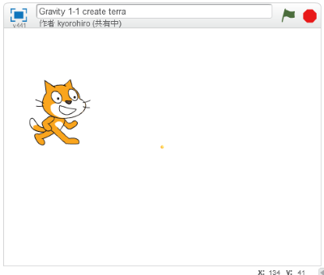
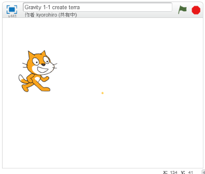

地球(ちきゅう)を画面(がめん)の中央(ちゅおう)に配置(はいち)する

地球(ちきゅう)を表示(ひょうじ)する位置(いち)を調整(ちょうせい)しましょう。 今回(こんかい)は中央(ちゅうおう)に配置(はいち)することにします。
(1) スクリプト画面(がめん)を開(ひら)く

(1-1) ボールをクリック
(1-2) スクリプトタブをクリック
(2) スクリプトを追加(ついか)する

(3) 確認(かくにん)する

地球(ちきゅう)を表示(ひょうじ)する位置(いち)を調整(ちょうせい)しましょう。 今回(こんかい)は中央(ちゅうおう)に配置(はいち)することにします。
